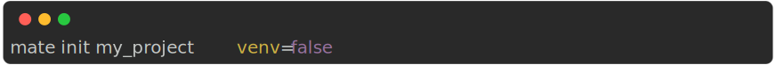
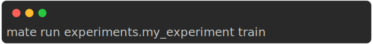

The following commands work within a mate project folder, that is, where the
mate.json file is located. This file will be generated by the
init command (see below).
Mate’s cli parser is a simple parser that parses the command line arguments and calls the appropriate method on the Mate class.
Notice that for boolean arguments, you can use either false or False, true or True. And for None you can use either null or None.
Example

Params
str : Path to the source modelstr : Path to the target modelClones a module

Params
str : Path to the module to create (relative to the
project folder)
Creates a new module The path respects the python format,
(e.g. my_module.sub_module).

Params
str : Path to the object to exportExports a function/class from a module

Params
str : Name of the projectstr : Parameters to pass to the project. These are the
same key-value pairs that are in the mate.json file (check out
that section).
Creates a new mate project in the current folder.
Example


Params
str : Path to the module to inspectProvides information about a module, such as:
Example


Params
str : URL to the package to installInstalls a module from url. The URL must be a git repository and point to the full path of the module.

Params
Prints the markdown documentation of the project

Params
str :Executes inside the python venv


Params
str : Path to the module to removeRemoves a module

Params
str : Path to the module to renamestr : New name of the moduleRenames a module.

Params
bool : =FalsePrints results

Params
str : Name of the experiment to runOptional : Command to run=NoneRuns an experiment or analysis. By default, mate assumes that you want to run an expriment.
Examples


Alternatively, you can run an analysis:


Params
str : Path to the module to showShows information about a module or experiment.

Params
bool : Export result as svg=FalsePrints a summary of the mate project.

Params
str : Command to run in the virtual environment
Executes inside the python venv